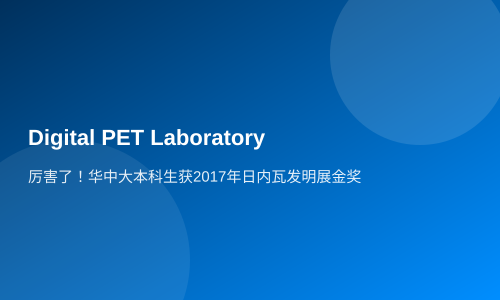

Excellent! Undergraduate students from Central China University won the Gold Award at the 2017 Geneva Invention Exhibition
At this year's International Exhibition of Inventions in Geneva, the project 'High Sensitivity Plug-and-Play Helmet PET' sparked enthusiastic reactions among industry experts and inventors. Gao Min recalled that during the three days of exhibition, her booth was always bustling with visitors who were attracted by its advanced concept and design. Many experts engaged in lively discussions with her about the project's technical details and functions.
It is known that the International Exhibition of Inventions in Geneva was founded in 1973 and is co-hosted by the World Intellectual Property Organization, the Swiss Federal Government, among others. It is one of the world’s longest-running and largest invention exhibitions. The 45th edition held in March 2017 attracted approximately 1,000 new inventions from over 40 countries and regions, with 83 entries coming from mainland China.
Gao Min: 'I think I did pretty well this time.'
With a fair complexion and petite figure, Gao Min, a senior undergraduate student born in the mid-1990s, looks younger than her actual age. This youthful appearance has brought her some troubles. On the first day of the exhibition, an expert from a neighboring booth mistook her for a 13 or 14-year-old middle school student and asked the translator accompanying him: 'How can there be children here to participate in the exhibition?' When the translator informed the foreign expert that Gao Min was the sole representative responsible for the helmet PET project, he was stunned.
Despite her youthful appearance, Gao Min said she has a tomboyish spirit inside. As the only undergraduate among the 16 participants from Huazhong University of Science and Technology, this trip to Geneva was also her first international experience. From booking flights and hotels to organizing all aspects of the exhibition, everything was handled by herself. 'I think I did pretty well this time,' she recalled with pride: 'On my first day at the hotel, I encountered another group of students who had walked nearly an hour from the airport due to language barriers. Despite not knowing French either, I called the hotel as soon as I landed and communicated with the bus driver using sign language and English, successfully reaching the hotel. At that moment, I felt quite capable.'
In fact, such capabilities can be attributed to her rich experience in scientific research. Since her freshman year, Gao Min has been working on scientific research at the Digital PET Laboratory. Balancing coursework with practical work was challenging; sometimes she wished she could split her time into two halves. 'When I worked on my first undergraduate innovation project during sophomore year, my programming skills were still weak and I wasn't very familiar with related software. At that time, my course load was heavy, taking 12 classes a day for an entire month. During this period, I could only squeeze in work at the lab during lunch breaks and ponder over the project after returning to dormitory. It was more stressful than preparing for college entrance exams. However, all these efforts paid off as I successfully achieved my experimental results.'
Currently, under the guidance of Professor Xie Qingguo and other experts, Gao Min has participated in and led multiple undergraduate innovation projects at both school and national levels, producing fruitful research outcomes. 'It is because of my mentor's trust and encouragement that I have been able to achieve today’s results. Histrust in letting me work independently (letting me do it on my own) trust, and the constant encouragement that keeps me going, has enabled me to persevere. When talking about her mentor, Professor Xie Qingguo, the inventor of all-digital PET, Gao Min is full of gratitude.
The high-sensitivity personal dosimeter, which participated in radiation detection at Fukushima, won a gold medal.
Notably, alongside the helmet PET, another research outcome from the Digital PET Laboratory also received a gold award: 'High Sensitivity Personal Dosimeter'. Recently, a report titled 'Xinhua News Correspondent Takes Risk to Test Radiation Levels in Fukushima - Can Japan Still Be Visited for Tourism?' went viral on various websites. The high-sensitivity personal dosimeter carried by the reporter, which made his hands numb due to its sensitivity, was precisely this radiation detection device from the Digital PET Laboratory.
The personal radiation dose meter based on full digital PET technology can accurately detect and display individual dose equivalent data, achieving higher sensitivity than traditional detectors in a smaller size. It can monitor subtle changes in natural environmental radiation levels and issue real-time alarms for radiation exceeding thresholds, responding quickly to hazardous situations. Additionally, this personal radiation dosimeter has the unique feature of synchronizing detected radiation data in real time with mobile phone apps, allowing users to view current radiation doses on both the instrument and their phones, providing comprehensive radiation safety warnings.
Huazhong University of Science and Technology's graduate student Hua Yuexuan from the School of Life Sciences introduced that ionizing radiation generated by large-scale events such as nuclear leaks, explosions, or tests is well-known for its harm to the environment and human health. However, there are no accumulated data on the impact of low-dose radiation encountered in daily life by ordinary people internationally. Currently, both domestically and abroad, management of radiation health for radiological workers remains at a stage where 'pollution comes first, followed by remediation', meaning that after operating with radioactive materials, they then tally up their received radiation doses, unable to issue real-time alarms or avoid harm in time, which can cause irreversible damage once the harm occurs. There is no management of low-dose radiation encountered daily by ordinary people.
In fact, individual differences among people are significant, and their tolerance for radiation varies greatly. If a personal radiation dosimeter were used, all radiation data could be stored in the cloud to establish a lifelong traceable personal radiation dose record, providing solid data support for personalized medicine while also offering a big data platform for low-dose radiation health research.
Moreover, the personal radiation meter can share radiation distribution data, allowing users to check global radiation distribution data at any time. Worried about Japan's nuclear pollution and hesitant to travel there? Checking your personal radiation dose meter at home will tell you whether your travel destination is safe!
Huazhong University of Science and Technology’s selection of seven projects for the 2017 International Exhibition of Inventions in Geneva, winning six gold medals and one silver medal, fully demonstrates that college students can become a vital force in promoting mass entrepreneurship and innovation. 'The platform provided by universities is really great; as long as you have ideas and are willing to act on them, the school will provide all resources for you, creating a stage of your dreams where you can shine,' student Gao Min said.